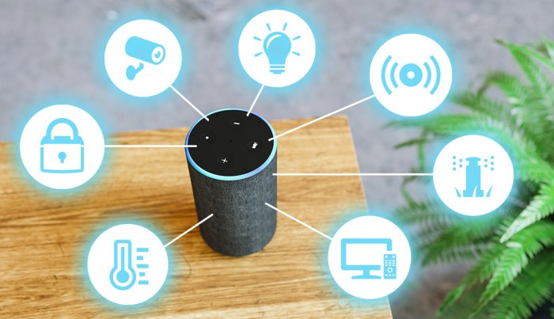
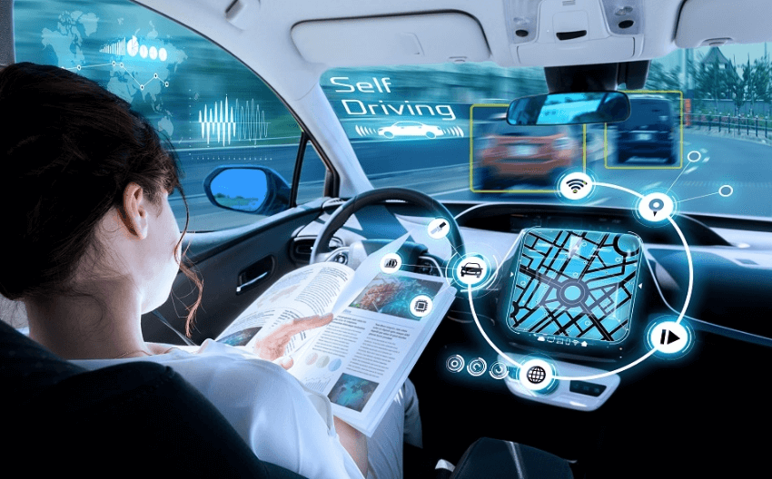

Asistentes Virtuales
Los asistentes virtuales, como Alexa, Siri o Google Assistant, se han convertido en compañeros cotidianos
en muchos hogares alrededor del mundo. Estos asistentes, impulsados por inteligencia artificial, son
capaces de realizar una amplia gama de tareas, desde responder preguntas triviales hasta controlar
dispositivos inteligentes del hogar, como luces, termostatos o cerraduras. Además, su capacidad para
aprender de las interacciones con los usuarios les permite mejorar continuamente su precisión y
utilidad. Los asistentes virtuales están transformando la forma en que interactuamos con la tecnología,
facilitando la ejecución de tareas diarias con comandos de voz simples. Gracias a su integración con
aplicaciones y servicios en línea, estos asistentes pueden recordar citas, enviar mensajes, reproducir
música, y hasta realizar compras en línea. En resumen, los asistentes virtuales no solo ahorran tiempo,
sino que también simplifican la vida diaria al automatizar y agilizar procesos comunes.

Inteligencia Artificial en el Transporte
La inteligencia artificial está revolucionando el sector del transporte, desde vehículos autónomos hasta
la
optimización de rutas en tiempo real. Empresas como Tesla, Waymo y Uber están desarrollando vehículos
autónomos que utilizan algoritmos avanzados de inteligencia artificial para analizar el entorno, tomar
decisiones de conducción y garantizar la seguridad de los pasajeros. Estas tecnologías no solo prometen
reducir el número de accidentes causados por errores humanos, sino que también pueden contribuir a
disminuir
la congestión del tráfico mediante la comunicación entre vehículos para una mejor coordinación en las
rutas.
Además, la IA se utiliza en aplicaciones de movilidad para predecir la demanda de transporte y mejorar
la
eficiencia de los servicios públicos, como autobuses y trenes. En los centros urbanos, estas
innovaciones
están transformando la forma en que las personas se desplazan, creando sistemas de transporte más
inteligentes, seguros y sostenibles.

Inteligencia Artificial en la Salud
La inteligencia artificial está desempeñando un papel crucial en la transformación del sector de la
salud,
mejorando tanto el diagnóstico como el tratamiento de diversas enfermedades. Algoritmos de aprendizaje
automático se utilizan para analizar grandes volúmenes de datos médicos, desde imágenes de resonancias
magnéticas hasta datos genéticos, ayudando a los profesionales de la salud a detectar enfermedades con
mayor
precisión y rapidez. Además, los chatbots de IA están siendo empleados para ofrecer atención médica
primaria, responder preguntas frecuentes, y realizar evaluaciones iniciales de los síntomas de los
pacientes. Por otro lado, la IA también se utiliza en el desarrollo de medicamentos, acelerando el
descubrimiento de nuevos compuestos y personalizando los tratamientos en función del perfil genético del
paciente. Estas aplicaciones están permitiendo una atención médica más proactiva y personalizada,
mejorando
los resultados para los pacientes y optimizando los recursos del sistema de salud.